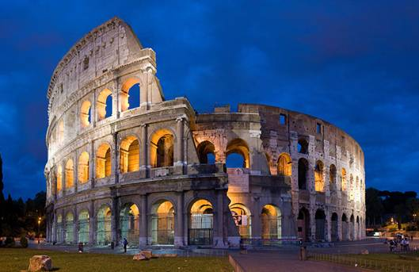
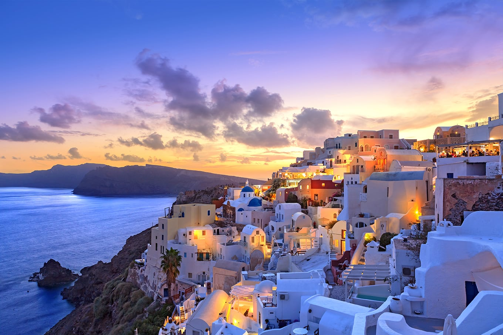

Conhecendo lugares turísticos
Big Ben

O Big Ben é um ícone icônico de Londres e um dos relógios mais famosos do mundo. Localizado na Torre do Relógio, que faz parte do Palácio de Westminster, o Big Ben é na verdade o nome do sino de 13,5 toneladas dentro da torre. Construído em 1859, o relógio tem quatro faces e é famoso por sua precisão e pela peculiaridade de fazer um som forte e distinto a cada hora. Embora a torre e o relógio tenham passado por reformas ao longo dos anos, o Big Ben continua a ser um símbolo amado de Londres e uma das atrações turísticas mais populares da cidade.
Coliseu
O Coliseu é um lugar cheio de histórias e curiosidades fascinantes. Durante sua longa existência, o anfiteatro foi palco de inúmeras batalhas de gladiadores e outros espetáculos sangrentos, além de ter sido danificado por terremotos e pilhagens. Há também histórias interessantes, como a de um Papa que supostamente abençoou os animais que seriam usados nas lutas de gladiadores antes de um evento, na tentativa de impedir a violência. Além disso, há lendas que dizem que o Coliseu está assombrado por fantasmas de gladiadores e outras figuras históricas. Hoje em dia, o Coliseu é um dos monumentos m ais visitados em todo o mundo e continua a fascinar pessoas de todas as idades com sua beleza e rica história.
Santorini
Santorini é uma das ilhas mais bonitas e populares da Grécia, famosa por suas pitorescas vilas de casas brancas com cúpulas azuis e vistas deslumbrantes do Mar Egeu. A ilha foi formada por uma grande erupção vulcânica e é lar de algumas das mais belas praias e formações geológicas do mundo. Com uma rica história e cultura, Santorini oferece aos visitantes a oportunidade de explorar sítios arqueológicos, vinícolas, galerias de arte e muito mais. Com uma variedade de atividades, praias deslumbrantes, gastronomia deliciosa e uma atmosfera relaxante e encantadora, Santorini é um destino de sonho para muitos viajantes em busca de um lugar único e memorável.
Torre Eiffel

A Torre Eiffel é um dos ícones mais famosos de Paris e uma das estruturas mais reconhecidas em todo o mundo. Construída em 1889, ela tem uma altura de 324 metros e foi inicialmente projetada como uma atração temporária para a Exposição Universal de Paris. Apesar da controvérsia e críticas iniciais, a Torre Eiffel se tornou um símbolo da cidade de Paris e é hoje um dos monumentos mais visitados em todo o mundo. Com vistas deslumbrantes da cidade, restaurantes e várias opções de atividades, a Torre Eiffel continua a fascinar visitantes e moradores locais até hoje.